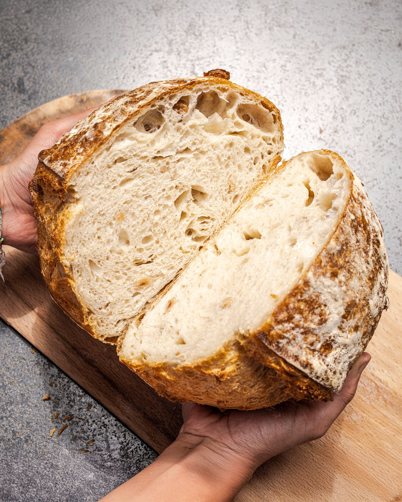

Classic Bakery
Rustic Homemade Bread
A golden crust, a soft centre, and the comforting aroma of freshly baked bread.
⏱ Prep: 20 min
🔥 Bake: 30 min
🍞 Serves: 6
Ingredients
- 500 g plain or bread flour
- 7 g instant yeast
- 1 tablespoon sugar
- 1 teaspoon salt
- 300 ml warm water
- 2 tablespoons cooking oil
Preparation
- Mix flour, yeast, sugar, and salt in a bowl.
- Add warm water and oil, then knead for 8–10 minutes.
- Cover and leave in a warm place until doubled in size, about 1 hour.
- Shape the dough and place it in a greased loaf tin.
- Allow it to rise for another 25–30 minutes.
- Bake at 190°C for 25–30 minutes until golden and cooked through.
- Cool before slicing and serving.